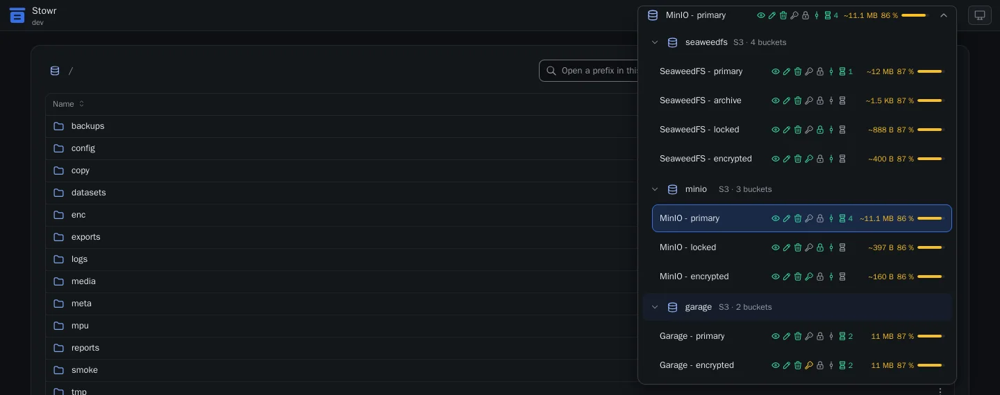
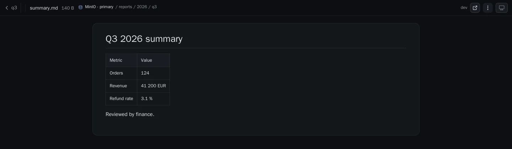
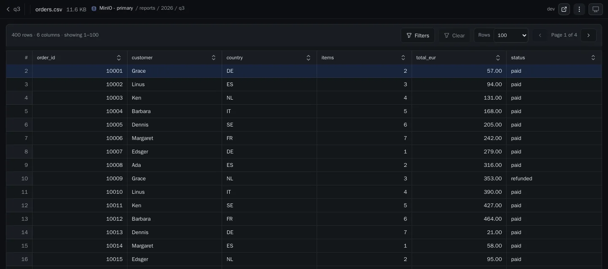
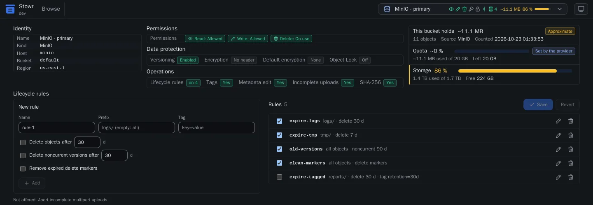

Every storage in one menu
Switch between hosts and buckets. Each entry shows what you may do, the versioning, the lock, the lifecycle rules and how full the bucket is.
Stowr shows S3 buckets, Google Cloud Storage and mounted folders in one web page. It is one 4.8 MB binary with one configuration file.
Linux, amd64 and arm64. Each file is on the page of the release, with its checksum.

Switch between hosts and buckets. Each entry shows what you may do, the versioning, the lock, the lifecycle rules and how full the bucket is.

Markdown, PDF, images, logs and archives open in the page. Stowr reads only the bytes that it shows.

CSV, Excel, Parquet, SQLite and JSON lines open as tables. Sort, filter and page without a download.

See the permissions, the versioning, the encryption, the quota and the free space. Add and edit the lifecycle rules on the same page.
Stowr reads the answers of each provider and shows only what the provider can do. A server folder, such as a mount of SeaweedFS, is a volume.
curl -fsSLO https://github.com/SCcagg5/stowr/releases/download/v0.1.0/stowr_0.1.0_linux_amd64.tar.gz
tar xzf stowr_0.1.0_linux_amd64.tar.gzFor arm64, use the file stowr_0.1.0_linux_arm64.tar.gz.
access {
mode = "open"
}
auth "s3" {
provider = "s3"
mode = "access_key"
endpoint = "https://s3.example.internal"
region = "eu-west-1"
access_key_id_file = "/run/secrets/s3-access-key-id"
secret_access_key_file = "/run/secrets/s3-secret-access-key"
}
bucket "documents" {
name = "Documents"
auth = "s3"
bucket = "documents"
permissions = ["read", "write", "delete"]
}Save it as config.hcl. The open mode is for a closed network.
./stowr -c config.hclOpen http://localhost:8080. Check the file first with ./stowr print-config -c config.hcl.
The archive has no runtime dependency. Next: configuration, access of humans, architecture.